From the first approval to the claims file, in one place.
Bunya Support is the next generation of NDIS and disability service provider software. Rosters and shifts, intake, agreements, incidents and the claims file sit in one place, so less of the day goes on admin and your admin team gets time back.
AlphaNow in alpha: we're setting up providers who want to try it and help shape it. What alpha means
8:30 amApprovals
Before
Timesheets, leave requests and incident follow-ups arrive in different places, and each one is chased on its own.
With Bunya Support
One list of what needs a decision: completions, leave, incidents, tasks and compliance items, grouped, with bulk actions to clear several at once.
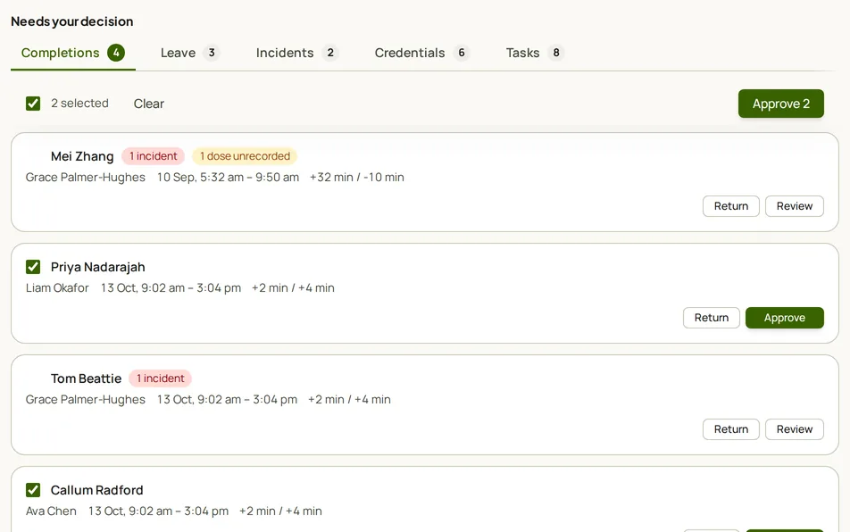
10:00 amA shift goes unfilled
Before
A gap in the roster that nobody spots until the shift is close.
With Bunya Support
The roster board lays out staff by day and keeps unfilled shifts in a lane of their own, where they can't be missed.
- Open a shift in a side panel to assign it; checks run as you do, and the serious ones stop it.
- Save the regular week as shift patterns, and set compatibility rules.
- Leave requests come in for approval, and availability is recorded for each worker.
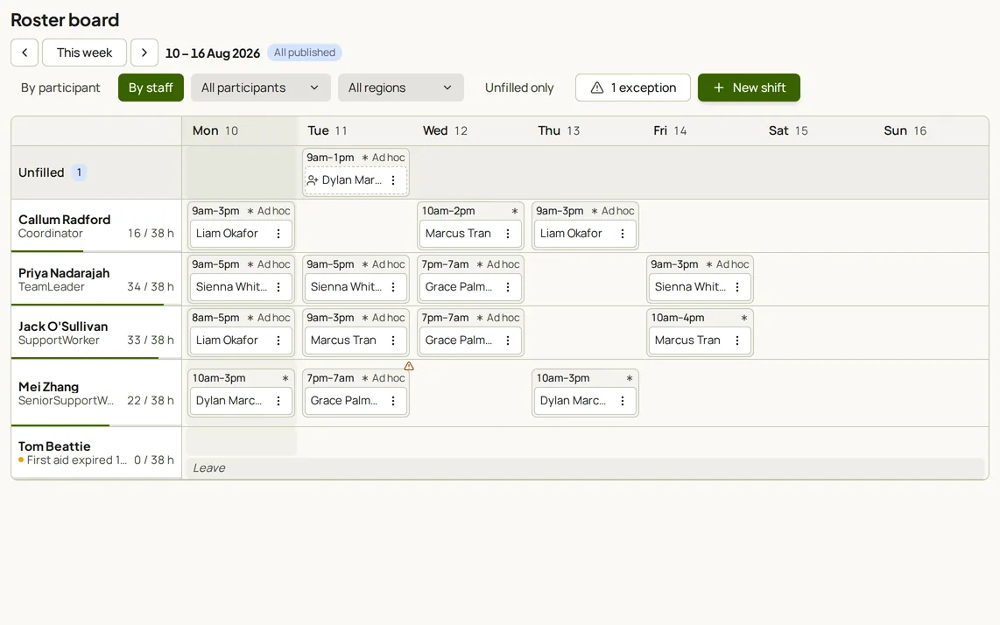
11:30 amA new enquiry
Before
An enquiry noted during a call, with intake started somewhere else later.
With Bunya Support
Log the enquiry, start intake from it, and book the intake visit with a calendar invite.
- The intake wizard takes the participant's details step by step.
- Carers can fill in a caregiver profile from a link, and their answers wait in a review queue.
- An onboarding checklist shows what's still to do.
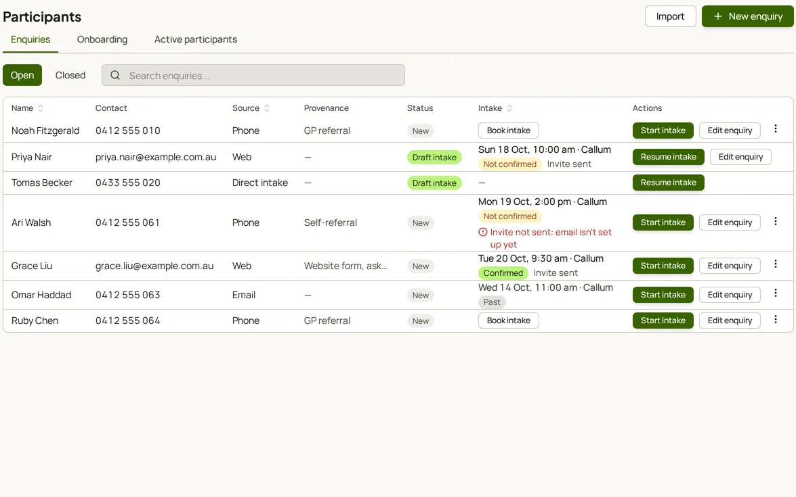
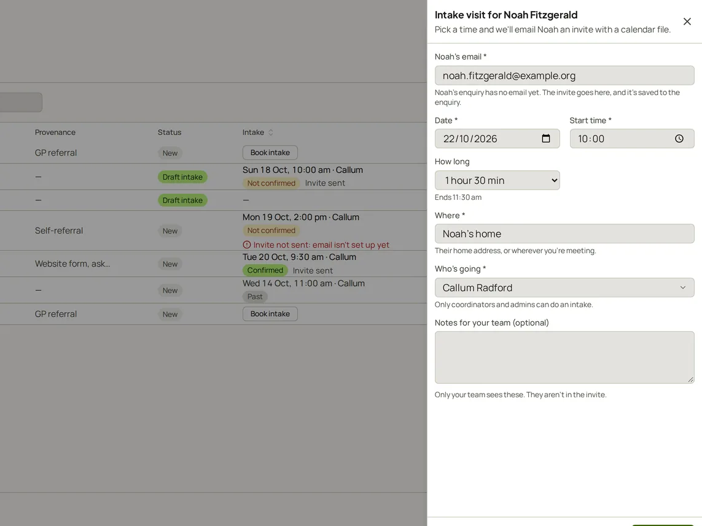
1:00 pmAn agreement to draft
Before
A service agreement written in a document, with the budget worked out separately.
With Bunya Support
Draft the service agreement in steps: set the week pattern and travel, watch the running total, check the draft, then approve it.
- Funding plans have their own editor, and the budgets page keeps a ledger.
- A list shows the agreements ending soon, with a renewal review when one comes up.
Agreements are still being built during the alpha, so expect this part to change most.
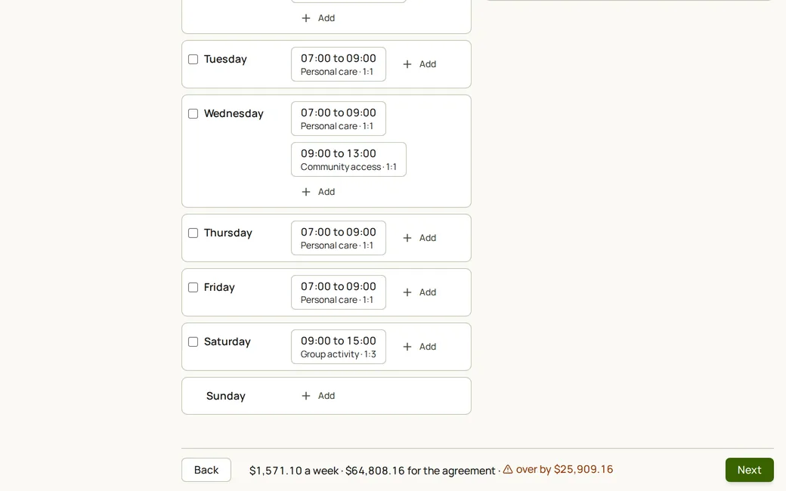
2:30 pmAn incident on shift
Before
An incident written up on paper or in an email, with the follow-up tracked somewhere else.
With Bunya Support
Built for NDIS compliance work: a stepped incident form with a body map and a restrictive practices step, kept in the same place as the roster.
- A reportable incident still unreported 24 hours after its record was created is flagged overdue.
- Each participant has a restrictive practices register, with an authorisation badge.
- Medications and doses are kept on a register, and risk entries sit on the participant record.
- Staff credentials show expiry warnings before they lapse.
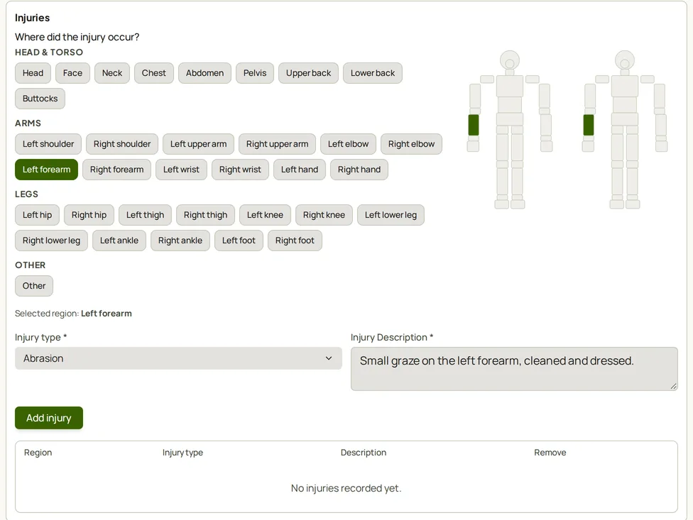
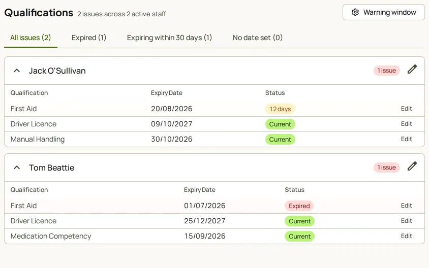
4:00 pmThe claims file
Before
Finished shifts checked one by one before a claim can be put together.
With Bunya Support
Review finished shifts, approve or return them, or approve a batch at once. Claims are built from approved shifts, with a preview before anything is generated.
- Export the bulk payment request file and upload it yourself, as you do now.
- A per-booking invoice when you need one.
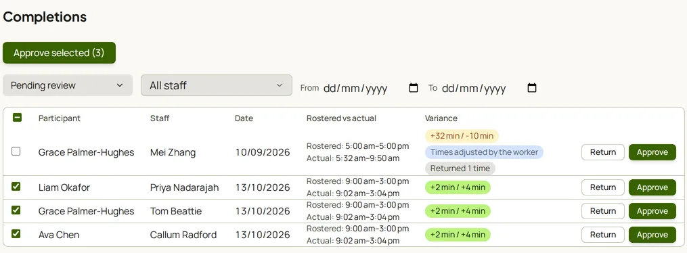
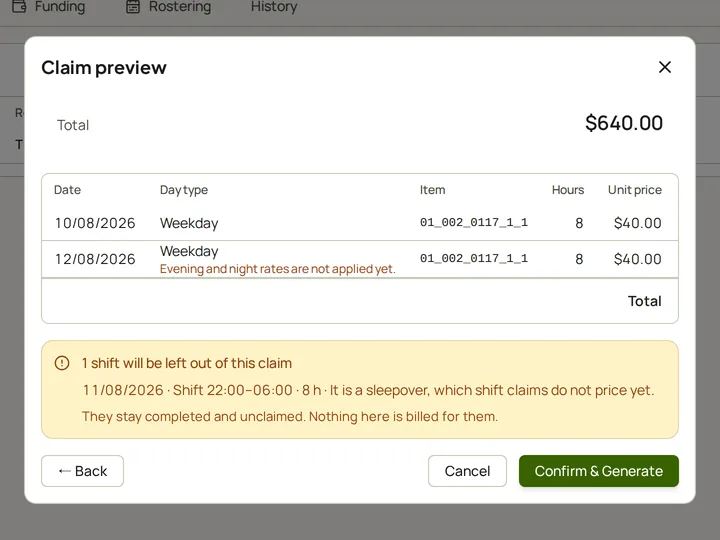
On shiftMy shifts on a phone
Before
Shift details passed on by phone, with notes and medication records kept on paper.
With Bunya Support
Support workers see their week of shifts on their phone and work through each one: before, during and finish.
- The medication dose sheet and shift notes are inside the shift.
- Witness approvals and leave requests are in the same place.
- A booked intake visit shows up as a card.
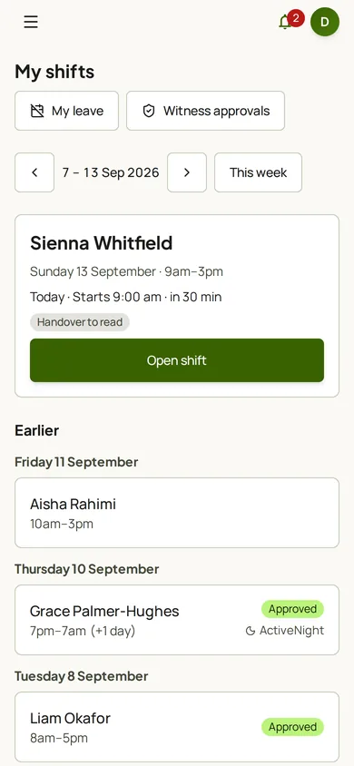
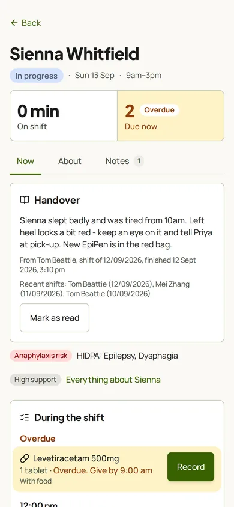
Before day one.
Setting up, and getting your data out again whenever you need it.
- Import participants, staff and funding plans with the import wizard, and undo an import if it goes wrong.
- Export all of your organisation's data whenever you want it.
- Syncs staff from Employment Hero, if you use it.
- In-app notifications, with each person choosing what they hear about.
- Changes to key records are kept in an audit trail.
What alpha means.
- Being built
- It works, and it's still being built: screens will change and you'll find rough edges. Agreements are changing most.
- Setting up
- We get in touch, set up your organisation with you, and listen to what slows your day down.
- Sample data
- Every screen on this page uses sample data, with fictional people and organisations.
- Cost
- There's no price list during the alpha, so talk to us about your organisation.
- In-app notifications work, but email isn't switched on yet.
- Who it's for
- NDIS and disability service providers who want less admin and will tell us what isn't working.
Join the alpha.
Tell us about your organisation and what takes up your admin team's day. We'll be in touch to set you up.
What happens next
- We read each sign-up ourselves.
- We get in touch by email or phone to set you up.
- No confirmation email is sent, so there's nothing to wait for in your inbox.
Already using Bunya Support? Sign in
Thanks, we have your details.
We'll be in touch. No confirmation email is sent, so there's nothing to look out for in your inbox.